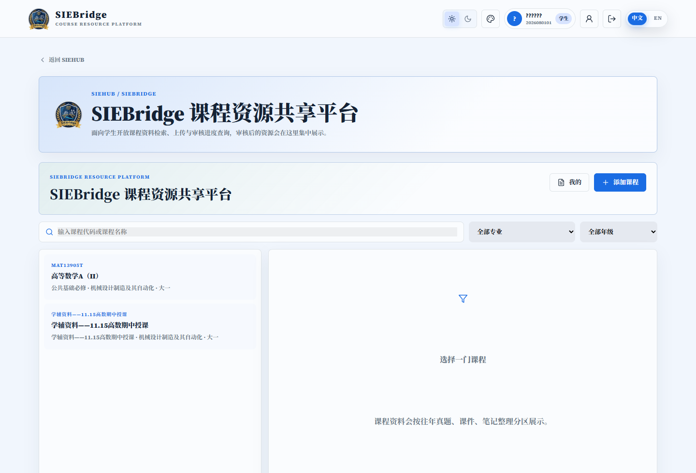
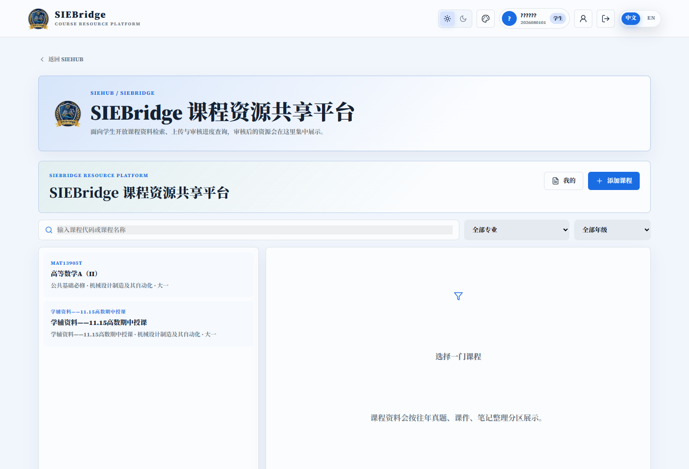

学辅支持
高数、普物、有机化学、四六级等考前辅导，连接朋辈讲师与真正需要帮助的课程。
课程攻坚ACADEMIC TECHNOLOGY DEPARTMENT
我们把课程、竞赛、表达与升学资源组织起来，让同学在需要的时候，找到一份资料、一位同伴或一个清晰的方向。

截图来自本地登录后的真实系统界面。
学术科技部做的，是把零散的经验组织成可以被搜索、被理解、被继续使用的支持系统。每一项工作都对应同学成长中的一个节点。
高数、普物、有机化学、四六级等考前辅导，连接朋辈讲师与真正需要帮助的课程。
课程攻坚国奖答辩与奖学金分享，把优秀同学的准备过程拆开，让路径可以被参考。
经验复用SPEAK UP! 让观点获得舞台，在一次次发言中训练结构、节奏与临场反应。
观点成形留学、职业规划、萌芽杯与挑战杯，帮助同学把眼前的课程连接到更远的选择。
向外生长SIEBridge 是 SIEHUB 中的课程资源共享平台。上传、审核、公开、凭证和我的记录组成一条可追溯的资源链。
Open SIEBridge ↗
截图来自本地真实系统界面。
从基础课程到未来选择，项目矩阵把每一场活动放回学年的节奏里，也让团队知道下一步该准备什么。
见证优秀，拆解准备过程，把可复制的经验重新交到同学手里。
EVIDENCE TO ACTION德国留学、升学规划与学长经验。
从材料到答辩，打磨一份个人发展方案。
本地编辑模式下可为每个活动上传多张照片并轮播预览；服务器端展示为只读版本。
展示板预留成员照片位，后续本地编辑时可替换为正式头像与介绍。
统筹学术科技部项目矩阵、跨部门资源协同与重点活动复盘。
负责 SIEBridge 资源流转、课程学辅与材料审核。
负责竞赛支持、表达训练与活动展示素材整理。
ACADEMIC YEAR
从开学资源整理到期末学辅，再到竞赛与答辩，项目安排跟随真实需求滚动更新。
课程资料、学辅主题和朋辈讲师招募。
表达训练与主题分享。
高频课程复习与答疑支持。
挑战杯、萌芽杯选题与组队。
国奖答辩、经验分享与资料归档。
JOIN THE NODE
加入学术科技部，和我们一起维护资源、组织分享、搭建表达舞台，让知识在学院里继续流动。
进入学术科技部 ↗